Renvoyer un mot de passe par e-mail : la méthode Vernam
Cher Zéro, bienvenue !
Peut-être vous êtes-vous déjà demandé comment certains sites faisaient pour renvoyer à leurs membres leur mot de passe... et à raison ! Tout site qui se respecte se doit de hacher les mots de passe de ses membres dans sa BDD, ce qui relève, vous l'admettrez, de la sécurité élémentaire. Ainsi, quand bien même un hacker parviendrait à pénétrer dans la BDD de votre site, il ne pourrait rien faire des mots de passe qu'il y trouvera (puisque ceux-ci sont justement hachés). Mais c'est alors qu'une question se pose : étant donné que les mots de passe sont hachés, comment le site peut-il prétendre pouvoir les récupérer ? Cela voudrait dire que le système de hachage n'est pas infaillible ou que les mots de passe sont carrément stockés tels quels ? Rien de tout ça ! Nous allons voir comment un mot de passe peut être extrait d'une base de données alors qu'il est haché en bonne et due forme, ce qui nous offrira la possibilité de le renvoyer à un membre en cas d'oubli. :) Dans ce tutoriel, tout tournera autour d'une méthode de cryptage appelée le cryptage Vernam.
Dans ce chapitre, je vais dans un premier temps résumer la situation actuelle, c'est-à-dire ce qui se fait généralement sur la plupart des sites web (dont le vôtre, probablement), afin que les plus zéros d'entre vous ne soient pas largués.
Ensuite, je vais expliquer de quelle manière on peut améliorer notre système pour pouvoir récupérer les mots de passe de manière totalement sécurisée. :)
Enfin, je vais expliquer le fonctionnement du cryptage Vernam, qui sera l'outil indispensable pour parvenir à nos fins.
À noter que ce chapitre est un chapitre théorique : il explique comment on arrive à faire ce qu'on veut et presque aucun code PHP n'y apparaît. Dernier rappel : je suppose le tutoriel officiel sur le PHP entièrement maîtrisé jusqu'à la fin du chapitre 3. ;)
Résumons notre situation : pour qu'un membre puisse disposer d'un compte sur votre site, il doit d'abord... s'enregistrer ! Vous créez donc une page d'enregistrement dans laquelle il doit entrer :
le pseudonyme qu'il désire avoir ;
un mot de passe ;
et des tas d'autres joyeusetés que je vous laisse le plaisir d'imaginer !
Une fois le formulaire envoyé et après un traitement de ses données, vous enregistrez le tout dans la BDD en prenant bien soin de hacher le mot de passe. Le compte est désormais créé et l'utilisateur dispose d'une identité sur votre site. Jusque-là, rien de bien compliqué. ;)
Reste à savoir de quelle manière on va hacher les mots de passe... La méthode de hachage la plus couramment utilisée en PHP (et la plus simple) est celle du md5. Pour hacher une chaîne de caractères avec cet algorithme, il suffit simplement d'utiliser la fonction md5 et le tour est joué :
<?php
$MDP_Crypt = md5('Je suis un Zero');
?>
La variable $MDP_Crypt contiendra donc 'Je suis un Zero' haché en md5 (ce qui donne 577bb7a817ed815f152dcb6bbb62e03a, si vous voulez tout savoir). Une même chaîne de caractères donne toujours le même résultat. Vous pouvez donc vous amuser à hacher à nouveau 'Je suis un Zero' autant de fois que vous voulez avec l'algo md5, vous aurez toujours 577bb7a817ed815f152dcb6bbb62e03a, le résultat ne changera pas.
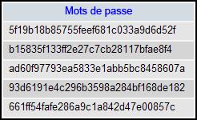
Base de données avec mots de passe hachés en md5
On va considérer que le hachage md5 est totalement infaillible et qu'il n'est pas possible de le casser, bien que ça ne soit pas tout à fait vrai (à cause des collisions ; pour plus d'informations, voir ici). Rien ne vous empêche d'utiliser d'autres algorithmes plus sécurisés, comme le SHA (j'ai choisi le md5, car c'était le plus connu).
Pour résumer, voici ce qui se passe sur un site lambda.
Lorsqu'un membre veut s'inscrire sur le site, il rentre des données dans un formulaire, dont son mot de passe. Ce mot de passe est haché avec la fonction md5 et ensuite envoyé dans la base de données (en plus des autres éléments du formulaire, que je limite au pseudo dans le schéma ci-dessous :) ).
Si le pseudo n'est pas déjà présent dans la base de données, créer un nouveau compte.
La connexion
Si un membre désire se connecter sur votre site, il doit entrer son pseudo et son mot de passe dans une page de connexion. Pour pouvoir lui permettre de se connecter, il faut d'abord vérifier si le pseudo qu'il a entré existe et, le cas échéant, vérifier si le mot de passe entré est également correct. Le « souci », c'est que le mot de passe dans la BDD est haché. Pour savoir si le mot de passe entré dans le formulaire est correct, on ne peut fonctionner que par comparaison. Donc, il va falloir hacher (toujours en md5) le mot de passe donné par l'utilisateur et le comparer avec celui de la base de données. Si les deux éléments sont identiques, alors l'utilisateur peut se connecter. :)
Le principe qu'on vient de voir pour la connexion est simple : il suffit de comparer le MDP fourni par l'utilisateur et celui contenu dans la BDD pour savoir s'ils sont égaux.
Mais dans le cas d'une récupération de mot de passe, c'est différent : l'utilisateur ne fournit aucun mot de passe ! On ne peut donc rien comparer avec celui qui est dans la base de données. Si on tient à utiliser la méthode des comparaisons, il faut essayer toutes les combinaisons possibles et espérer avoir une chance de tomber sur la bonne, ce qui revient à faire de la force brute... ce qui n'a pas beaucoup de sens. Bref, on ne peut pas récupérer un mot de passe dans la BDD avec les outils qu'on a actuellement à notre disposition (ou du moins, on ne peut pas le récupérer de manière efficace et intelligente).
Mais n'allez pas pour autant jeter tout ce qu'on vient de voir à la poubelle ! Pour la connexion d'un membre, la technique des comparaisons est excellente ! Je ne vois d'ailleurs pas de quelle autre manière on pourrait procéder... Ce qu'on va donc faire, c'est améliorer notre système d'inscription en utilisant une méthode de cryptage : le cryptage Vernam. Le cryptage Vernam a besoin de deux choses : un texte à crypter (en l'occurrence le mot de passe) et une clef (un texte quelconque). Le résultat du cryptage dépend de la clef qu'on utilise, ce qui veut dire que si vous cryptez le même texte avec 2 clefs différentes, vous obtiendrez deux résultats différents.
Mais à quoi ça va servir d'utiliser le cryptage Vernam ? Si en plus il faut une clef, ça ne serait pas plus compliqué que le md5 ? Et puis, quelle clef utiliser ?
Que de questions ! Pour répondre à la première, ça serait bien de citer les grands avantages du cryptage Vernam. J'en vois deux :
contrairement au hachage md5, il est complètement réversible ! Ça veut dire que si vous cryptez un texte avec une clef, il est possible de le décrypter avec cette même clef ;
il fournit une sécurité absolue si certaines conditions sont remplies.
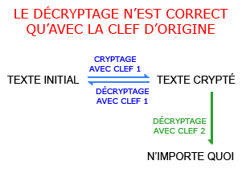
Certes, le deuxième point est important parce que ça veut dire que vous avez une garantie que personne ne peut déchiffrer un mot de passe crypté sans la clef avec laquelle il a été chiffré. Mais ce qui nous intéresse surtout, c'est le premier point : comme le cryptage Vernam est réversible, il est possible de récupérer le mot de passe et donc de le renvoyer à un utilisateur en cas d'oubli ! Que se passe-t-il si on décrypte un mot de passe avec une mauvaise clef ? On obtiendra n'importe quoi, tout simplement. :)
Pour résumer
Le cryptage Vernam peut crypter un mot de passe avec une clef. Il est possible de décrypter ce mot de passe crypté si on réutilise cette clef.
Même si vous ne savez pas encore comment fonctionne le cryptage Vernam, je vous demande de me faire confiance et d'accepter que cette méthode fonctionne (elle n'aura plus de secret pour vous dans la sous-partie suivante. ;) ).
D'accord, mais quelle clef utiliser ? Le nom de mon chat ?
Surtout pas, malheureux ! En fait, en tant que webmaster, vous n'avez pas à vous en soucier ! C'est à ceux qui s'inscrivent de désigner la clef. Vous avez sûrement déjà rencontré dans un formulaire d'inscription des champs comme « Répondez à cette question secrète »... Elle vient de là, la clef ! :D
À partir de maintenant, vous devriez entrevoir la manière de procéder pour améliorer le système. ^^
Lors de l'inscription
Lors de son inscription, le membre entre son mot de passe et une réponse à une question secrète. Lors du traitement du formulaire, on ne va pas enregistrer un mot de passe dans la BDD, mais deux : l'un sera haché en md5 et l'autre sera chiffré à l'aide d'un cryptage Vernam avec comme clef la réponse à la question secrète. Par rapport à l'ancien système, il faudra donc rajouter un champ dans la base de données afin de stocker les mots de passe Vernam. ;)
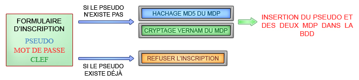
En plus de hacher le mot de passe en md5, on le crypte à l'aide de la clef. Une fois cela fait, on jette la clef à la poubelle et on enregistre le reste dans la BDD.
Hein ? « On jette la clef à la poubelle » ? Pourquoi ne met-on pas la clef dans la base de données ? On en a besoin pour décrypter le mot de passe si jamais le membre nous le redemande, non ?
Hum, monsieur est malin... En fait, ce n'est pas nécessaire ! Le membre doit de toute façon fournir cette clef pour récupérer son mot de passe (en donnant la réponse à sa question secrète). Ce qui me fait une super transition pour passer à...
La récupération du mot de passe
Maintenant, si un membre un peu tête en l'air oublie son MDP, il suffit de passer par un formulaire de récupération lequel on lui demande sa clef. Si la clef fournie est correcte, alors on peut renvoyer le mot de passe par e-mail, étant donné qu'on peut décrypter le mot de passe Vernam; :)
Objection no 2 ! Comment savoir si la clef fournie par l'utilisateur est correcte ? Comme expliqué plus haut, si on tente de déchiffrer un mot de passe Vernam avec une mauvaise clef, ça donnera n'importe quoi. Il faudrait savoir faire la différence entre un mot de passe correctement décrypté et un mot de passe qui ne l'est pas avant de penser à le renvoyer par e-mail, non ?
Bien vu ! Ça frôle le génie : pour savoir si le mot de passe récupéré avec la clef fournie est correct, il suffit de le comparer avec l'autre mot de passe (qui est haché en md5 dans notre exemple) ! Si la comparaison montre que les deux mots de passe hachés sont égaux, c'est que ces deux mots de passe non hachés sont également égaux et donc, que la clef qu'on a utilisé est correcte !
Mais j'admets qu'on aurait très bien pu créer un nouveau champ contenant toutes les clefs hachées en md5 et appliquer la technique des comparaisons pour vérifier si la clef fournie correspond bien à celle donnée lors de l'inscription du membre sur le site... Mais je préfère la première méthode, car premièrement, c'est plus professionnel (na :p ) ; deuxièmement, on ne s'encombre pas de la clef dans la BDD et on économise de la place (tous les bénéfices sont permis ^^).
Pour ce qui est de la récup' du mot de passe, le processus se résume donc à ça :
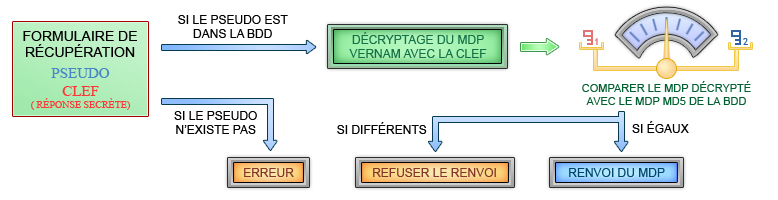
À noter que quand je parle du MDP Vernam et du MDP md5, je parle bien sûr de ceux qui sont stockés dans la base de données. ;) Naturellement, il faut également prévoir un champ pour l'adresse e-mail de l'utilisateur dans la BDD si on désire renvoyer le MDP par mail !
La récupération à l'aide d'une clef, vraiment efficace ?
Il se peut que vous vous interrogiez, à juste titre, sur l'efficacité de ce système de récupération. En effet, si cette méthode fonctionne parfaitement, elle impose par contre aux membres de devoir retenir une clef en plus de leur mot de passe. Dans ce cas, on pourrait se demander si un système de renvoi d'un mot de passe purement aléatoire par e-mail ne serait pas meilleur.
Où est le problème ? Si on oublie la clef, il est possible de s'en souvenir à l'aide de la question secrète !
C'est sûr, mais il faut garder à l'esprit qu'une tierce personne peut déduire la réponse à partir de la question. Si la question est « Dans quelle ville êtes-vous né ? », quelqu'un vous connaissant bien n'aura aucune difficulté à trouver la réponse.
Après tout on s'en fout, non ? Même si quelqu'un trouvait la réponse à la question secrète, ça ne lui servirait à rien puisqu'elle est envoyée par mail au membre.
À partir du moment où le membre en question est le seul à pouvoir accéder à son e-mail, je suis plus ou moins d'accord avec vous. Mais si celui qui tente de récupérer le mot de passe a accès à la base de données (par exemple, le webmaster), vous êtes vachement dans la mouise, car il peut appliquer la méthode de décryptage lui-même et ainsi récupérer le mot de passe.
Mais alors, que faire ?
C'est simple : soit vous répondez quelque chose que vous seul pouvez savoir, soit vous répondez quelque chose de totalement différent à la question secrète.
Tout ça nous ramène au sujet : ça veut dire qu'il faut quand même retenir quelque chose en plus du mot de passe. Personnellement, dans ce cas de figure, je préfère laisser au membre le choix lors de l'inscription. Il suffit d'avoir un choix multiple comme celui-ci ;
en cas d'oubli de mot de passe
renvoyer un mot de passe généré aléatoirement,
récupération du mot de passe à l'aide d'une clef.
Et c'est au membre de décider ce qu'il préfère.
Et voilà, vous savez tout de la méthode à suivre... à une chose près : comment crypte-t-on un mot de passe (ou, plus généralement, du texte) avec une clef ? Ça, cher Zéro, c'est l'affaire de la sous-partie suivante. :)
Entrons enfin dans le vif du sujet : le cryptage Vernam, ça fonctionne comment ?
Pour pouvoir effectuer un cryptage Vernam, vous avez besoin de deux choses : un texte à crypter (en l'occurrence, le mot de passe) et une clef. On va démarrer avec un exemple.
Imaginons que nous voulons crypter le texte 'Site du Zero' avec la clef 'Mateo'. La technique consiste à placer la clef sous le mot de passe et de la répéter jusqu'à ce qu'on atteigne la longueur du mot de passe. Nous obtenons donc ce résultat :
La clef est répétée jusqu'à ce qu'elle atteigne la longueur du mot de passe.
Bien entendu, la clef que l'utilisateur aura rentrée n'a pas forcément la même longueur que son mot de passe. Il y a donc trois cas à considérer :
si la clef est plus petite que le texte à crypter, alors on la répète jusqu'à ce qu'elle atteigne la longueur du MDP (ce qu'on fait dans l'exemple) ;
si la clef est de même longueur que le MDP, alors on ne fait rien (on la retape simplement sous le MDP) ;
si la clef est plus grande que le MDP, on la raccourcit jusqu'à la longueur du MDP.
Eh, si la clef est plus grande, ça veut dire on n'utilisera pas tous ses caractères ?
En effet ! Si on désire crypter le texte 'Mateo' avec pour clef 'Nabuchodonosaure', la clef sera raccourcie à 'Nabuc'. Donc, si vous cryptez maintenant 'Mateo' avec 'Nabuchodinosaure' comme clef, le résultat sera le même puisque le raccourcissement ('Nabuc') est le même. On obtient donc le même résultat avec deux clefs différentes. Si ça vous chagrine, c'est le moment d'aller faire un tour dans l'annexe de ce tuto sur l'inviolabilité du cryptage Vernam. ^^
Maintenant, faites bien attention à ce que je vais expliquer, ce n'est peut-être pas évident à comprendre tout de suite.
Ce qu'on va maintenant faire, c'est attribuer à chaque caractère une valeur numérique. En d'autres mots, chaque caractère est associé à un nombre.
Aaaah, je sais ! On va numéroter les lettres de 1 à 26, comme dans l'alphabet : a = 1, b = 2, etc. Ça frôle le génie !
Hum, pourquoi pas... Ce n'est pas la meilleure manière de faire (j'expliquerai pourquoi par après), mais c'est sans doute la plus simple pour expliquer comment ça fonctionne. On va donc procéder comme ça dans un premier temps.
QUOI ? Tu es en train de me dire que ce que tu vas nous montrer, ça ne sert à rien ??
Hum, calmons-nous, voyons. :euh: Il est toujours bon d'utiliser un exemple simple pour commencer, c'est pour éviter que vous soyez largués ! Si je commence avec un truc trop compliqué dès le départ, vous n'allez jamais vous en sortir. Donc, dites-vous bien que je fais ça dans un but strictement pédagogique et donc pour que vous vous sentiez tout puissant à la lecture du cours et donc pour que mon tuto se tape un 20/20 ! Diabolique, non ? Je trouve aussi. :soleil:
Numérotation simple : l'alphabet
Si chaque lettre est remplacée par le nombre indiquant sa place dans l'alphabet, on obtient : 'S' = 19, 'i' = 9, etc. Nous avons donc :
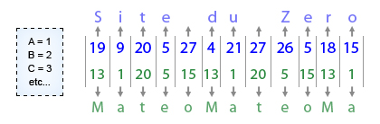
Chaque lettre est remplacée par le nombre qui correspond à sa position dans l'alphabet.
Maintenant, nous allons additionner chaque paire de nombres de la même colonne entre eux. Plus précisément, on va additionner chaque nombre avec celui qui se situe en dessous de lui. On obtiendra donc, dans notre exemple : 19 + 13, 9 + 1, etc., ce qui va nous donner une nouvelle suite de nombres :
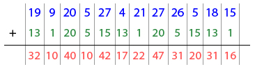
Addition du mot de passe et de la clef
Vous comprenez maintenant pourquoi il a fallu adapter la longueur de la clef à celle du mot de passe : si la clef avait été trop courte, les derniers caractères du texte à crypter n'auraient pas eu de caractère en dessous d'eux, et il n'aurait pas été possible d'effectuer une addition (pareil si la clef avait été trop longue, mais dans le sens opposé).
Nous y sommes presque ! Il ne reste plus qu'à remplacer chaque nouveau nombre par sa lettre correspondante dans l'alphabet ! On obtient ainsi un nouveau texte totalement bizarroïde... qui n'est autre que le mot de passe crypté !!
Vous remarquerez que certains nombres sont plus grands que 27, ce qui est assez embêtant car nous n'avons numéroté nos lettres que jusqu'à 27. C'est un autre problème que pose l'utilisation de l'alphabet comme choix de numérotation des caractères, mais on peut facilement contourner la difficulté : si on dépasse 27, on recommence au début. Donc si on a 28, cela équivaut à 1, si on a 29, cela équivaut à 2, etc. Bref, lorsqu'on obtient un nombre plus grand que 27, il suffit soustraire 27 à ce nombre. :)
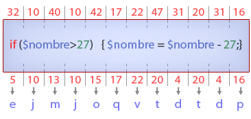
Si un nombre est plus grand que 27, soustraire 27 à ce nombre. Ensuite, remplacer chaque chiffre par sa lettre correspondante pour obtenir le texte crypté.
J'espère que vous avez bien profité du schéma parce que c'est le seul code PHP qui apparaît sur cette page. :diable: Et voilà, on a notre mot de passe crypté : 'Site du zero' crypté avec la clef 'Mateo' donne 'ejmjoqvtdtdp', ce qui est bien un texte complètement incompréhensible (sauf si vous pratiquez couramment le Bluxjtroblwyxnd oriental). Notez que si on avait numéroté nos caractères d'une manière totalement différente, on aurait eu un résultat totalement différent ! Le résultat du cryptage Vernam dépend donc du texte, de la clef et de la méthode ! Mais dites-vous bien que la numérotation utilisée n'influence en rien la sécurité : c'est juste une question de convention. Et pour retourner au mot de passe d'origine, c'est très facile : il suffit de faire la même opération sur le texte crypté avec la même clef et, au lieu d'additionner les nombres entre eux, on les soustrait. Le résultat donnera le mot de passe d'origine ! Que se passe-t-il si on ne réutilise pas la même clef ? On obtient n'importe quoi, comme vu dans la théorie.
Résumons-nous
On souhaite crypter un mot de passe à l'aide d'une clef.
Répéter ou raccourcir la clef jusqu'à ce qu'elle atteigne la longueur du mot de passe.
Remplacer chaque lettre par un nombre qu'on lui a attribué.
Additionner les nombres du mot de passe et de la clef entre eux.
Revenir en arrière en remplaçant chaque nouveau nombre par le caractère qui lui correspond.
Points importants
La manière dont on numérote les caractères, c'est nous qui la choisissons ! On peut choisir ce qu'on veut (du moment qu'on n'a pas le même nombre pour deux caractères différents). Il y a toutefois des choix plus malins que d'autres, comme on le verra juste après. ;)
L'opération est totalement réversible pour autant qu'on réutilise la même clef !
Voilà ! Une fois qu'on a compris le concept, ce n'est pas bien compliqué, il faut juste bien avoir en tête ce qu'on va faire. Mais avant de passer au codage, il nous reste à voir une technique de numérotation infaillible des caractères (j'vais vous désalphabetiser moi, z'allez voir !).
Passons à un système plus performant
Nous venons de voir comment réaliser le cryptage Vernam avec une technique de numérotation « simple ». Je mets « simple » entre guillemets parce qu'elle l'est et ne l'est pas à la fois : d'une part, elle est en quelque sorte pratique, car on n'a pas de difficulté à visualiser comment on numérote les caractères, mais d'autre part, cette numérotation ne couvre absolument pas tous les caractères possibles !
En effet, quand je dis caractère, je mentionne tous les caractères de votre clavier : aussi bien les lettres que les chiffres en passant par les espaces et les caractères spéciaux. Bref, chaque caractère est remplacé par un nombre. Et je ne parle pas des majuscules et des minuscules dont il faut aussi faire la distinction ('U' ne sera pas associé au même nombre que 'u', par exemple). Bref, tout ça pour dire que le système de numérotation selon l'ordre alphabétique n'est pas assez élaboré pour couvrir tout ce qu'un parfait littéraire taperait. ;)
Mais à part ce petit « inconvénient », la technique reste strictement la même : on ajuste la clef, on remplace chaque caractère par un nombre, on additionne et on revient en arrière.
Allez, crache le morceau : on utilise quoi comme numérotation ?
Le code ASCII, mon précieux ! Celui-ci transforme chaque caractère alphanumérique en code binaire (une série de 1 et de 0) de 8 chiffres ! On va donc se servir d'une transformation identifiable au tableau ci-dessous :
caractère
code binaire
'a'
01100001
'b'
01100010
...
...
Chaque caractère est associé à un code binaire.
Oooh, je vous vois venir...
Waaah, du binaire ! J'y arriverai jamais, c'est trop dur, je dois nourrir le chien, etc.
Paf, je le savais. ^^ Mais ne nous affolons pas : PHP a déjà une fonction implémentée qui permet d'effectuer cette transformation ! On peut donc transformer chaque caractère possible et imaginable en un code binaire de 8 chiffres avec des fonctions qui existent déjà ! PHP fait donc tout tout seul. Heureux ?
Alors, on a fini ? Pas tout à fait : lors de l'étape de l'addition, les nombres binaires ne fonctionnent pas tout à fait de la même manière que les nombres 'standards'. En effet, l'addition de deux nombres binaires doit donner un autre nombre binaire. Imaginons que l'on veuille additionner le nombre binaire 10 au nombre binaire 11. Si on se contente de faire une simple addition, on obtient 10+11 = 21. Or, 21 n'est pas un nombre binaire (puisque les seuls chiffres qui composent de tels nombres sont des 1 et des 0, et nous avons un 2 dans le résultat).
La dernière subtilité de notre modèle consiste à utiliser l'opérateur XOR à la place de l'addition standard. Cet opérateur est défini dans le tableau suivant :
Addition
Résultat
0 + 0
0
1 + 0
1
0 + 1
1
1 + 1
0
En binaire, 1 + 1 = 0.
Les plus astucieux d'entre vous auront peut-être remarqué que la soustraction n'a pas lieu d'être avec les opérateurs logiques (= opérateurs entre deux nombres binaires). On ne fait qu'additionner ! Exemple : si on considère un binaire qui vaut 10 et un binaire clef qui vaut 11 :
10 + 11 = 01 (première addition) ;
01 + 11 = 10 (en additionnant le binaire « crypté » avec le binaire clef, on retombe sur le binaire d'origine).
La morale de l'histoire, c'est qu'avec le modèle binaire, vous ne devez pas vous casser le poum à faire une fonction qui crypte (qui additionne) et une fonction qui décrypte (qui soustrait) ! Personnellement, je suis fan. :soleil:
Et voilà, vous savez maintenant tout ! En reprenant notre exemple,
Reprise de l'exemple précédent
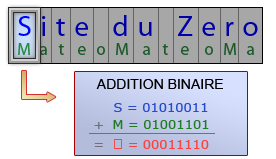
... chaque caractère du mot 'Site du Zero' est additionné avec le caractère juste en dessous de lui. Par exemple, si on considère la première lettre de chaque élément ('S' pour le texte et 'M' pour la clef), on va additionner le code binaire correspondant à S (01010011) avec le code binaire correspondant à M (01001101). On obtient alors un nouveau code binaire de 8 chiffres, qui correspond au premier caractère du message crypté (voir image ci-contre) ! Vous remarquerez que le caractère associé au code binaire obtenu n'est pas lisible par le navigateur, un rectangle est donc affiché par défaut. N'oublions pas : les espaces sont également de la partie, car les espaces sont des caractères ! Mais vous n'aurez pas à vous en soucier, car, comme je l'ai dit plus haut, PHP dispose de fonctions permettant de transformer n'importe quelle chaîne en langage binaire, et il fera ça très bien à notre place. :)
Dans un cours, le plus barbant pour les élèves, c'est la partie théorique. Eh bien je vous rassure : le meilleur est à venir ! Vous avez toutes les armes en main pour attaquer le codage de la fonction Vernam. Et pour ça, direction partie suivante !
Ouf ! C'est enfin terminé :p J'espère que vous n'avez pas trouvé ce chapitre trop lourd et, surtout, qu'il vous a bien éclairé sur la structure du code à réaliser (car Dieu sait que sans plan, on s'emmêle vite les pinceaux lorsque le code à taper devient conséquent ^^ ).
À partir de maintenant, c'est que du fun : place au codage !
Dans cette partie, nous allons créer la fonction qui va s'occuper du cryptage Vernam. Petit exemple dans un code PHP :
<?php
/*
* Exemple d'utilisation de la fonction Cryptage
*/
$MDP = "Site du Zero";
$Clef = "Mateo";
$Crypt = Cryptage($MDP, $Clef); // Crypte "Site du Zero" avec la clef "Mateo" et le stocke dans $Crypt
$Decrypt = Cryptage($Crypt, $Clef); // $Decrypt contient "Site du Zero"
?>
Comme prévu, l'utilisation est simple de chez simple ! Une fois la fonction Cryptage créée, une seule instruction permet de crypter le mot de passe. Mieux : c'est l'utilisation de cette même fonction qui permet de décrypter le mot de passe, étant donné qu'on utilise l'opérateur XOR ! Bien entendu, pour que le décryptage soit correct, il faut qu'on décrypte avec la même clef que celle utilisée lors du cryptage, mais ça, vous le savez déjà; :)
allonger ou raccourcir la clef pour qu'elle atteigne la longueur du mot de passe ;
transformer chaque caractère en code binaire à 8 chiffres (rappel) ;
additionner le MDP et la clef (tous deux binaires) en se servant de l'opérateur XOR ;
récupérer le résultat de l'addition et remplacer chaque paquet de 8 bits par son caractère correspondant.
Cela dit, les développeurs qui sont derrière PHP sont malins : ils ont réuni les trois dernières opérations en un seul opérateur : le ^ ! En d'autres mots, tout ce dont nous avons à nous soucier, c'est de rallonger / raccourcir la clef pour l'adapter à la longueur du mot de passe, car il s'agit d'utiliser ce fameux opérateur pour effectuer le cryptage Vernam proprement dit ! Ainsi, notre plan se réduit à :
allonger ou raccourcir la clef pour qu'elle atteigne la longueur du mot de passe ;
effectuer le cryptage via l'instruction $MDP^$Clef.
Chers amis, sachant cela, le codage va être une véritable promenade de santé !
Les conditionnelles de départ
Ces conditionnelles se chargeront d'adapter la taille de la clef. Vous remarquerez qu'il y a trois cas de figure :
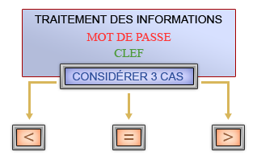
La clef est soit plus grande, soit plus petite, soit de même taille que le mot de passe.
Je sais, ce n'était pas nécessaire de faire un schéma, mais comme je n'ai pas grand-chose à mettre dans cette partie, il faut bien remplir. :p
<?php
function Cryptage($MDP, $Clef){
$LClef = strlen($Clef);
$LMDP = strlen($MDP);
if ($LClef < $LMDP){
// Code qui rallonge la clef
}
elseif ($LClef > $LMDP){
// Code qui raccourcit la clef
}
return $MDP ^ $Clef; // La fonction envoie le texte crypté
}
?>
La fonction strlen($variable) renvoie la longueur d'une chaîne de caractères. Comme on va se servir plusieurs fois des longueurs du mot de passe et de la clef, on stocke ces deux valeurs dans des variables au début de la fonction. ;) La première condition indique donc bien 'Si la longueur de la clef est plus petite que celle du mot de passe, alors rallonger la clef' (et vice-versa pour la seconde condition).
Une minute ! Tu as oublié la condition == !
C'est juste, mais elle n'a pas beaucoup d'intérêt : qu'est-ce qu'on y mettrait ? Si la taille de la clef est égale à celle du mot de passe, ne rien faire ? Autant ne rien mettre, dans ce cas ! Les conditionnelles sont donc au nombre de deux.
Reste maintenant à écrire les instructions à effectuer si les conditions sont respectées. Pour cela, on va se servir de deux fonctions prédéfinies : str_pad (qui servira à rallonger la clef) et substr (qui servira à la raccourcir).
La fonction str_pad
La fonction str_pad s'écrit : str_pad($variable, longueur, 'rallongement', position), où :
$variable désigne la chaîne de caractères sur laquelle on va effectuer le rallongement ;
longueur désigne jusqu'où l'on désire effectuer la répétition (= la taille désirée du texte) ;
'rallongement' est la chaîne de caractères avec laquelle on va rallonger $variable ;
position détermine de quel côté on désire effectuer le rallongement. Si on veut rallonger à gauche, on utilise STR_PAD_LEFT. Si on veut rallonger à droite, on utilise STR_PAD_RIGHT. Pour rallonger des deux côtés on utilise STR_PAD_BOTH.
Dans notre cas, ce qu'on désire rallonger, c'est la clef, et ce, avec elle-même jusqu'à la longueur du mot de passe. Comme on lit de gauche à droite, le rallongement se fait à droite. La ligne de code qu'on utilisera sera donc :
... et c'est tout ! Vous remarquerez que j'ai écrasé l'ancienne valeur de la clef par celle répétée plutôt que de stocker cette dernière dans une nouvelle variable. J'ai fait ça parce qu'on n'a plus besoin de la clef d'origine pour travailler. Le cryptage ne tourne qu'autour de la clef modifiée. ;)
Ah oui ? Pourtant, dans l'introduction, on réutilise $Clef pour le décryptage : on en a quand même besoin, donc !
Certes, mais le résultat sera bon quand même ! Simplement, on ne rallonge pas la clef lors du décryptage puisque ça a été fait dans le premier appel de la fonction Cryptage. L'exemple dans l'intro est donc correct.
Pour plus d'infos sur la fonction str_pad, c'est par ici. :)
La fonction substr
La fonction substr peut avoir deux ou trois arguments. On va se servir de celle disposant de 3 arguments. Celle-ci se note substr($variable, gauche, droite), où :
$variable représente la chaîne de caractères à raccourcir ;
gauche indique le nombre de caractères à supprimer en partant de la gauche (nombre positif) ;
droite indique le nombre de caractères à supprimer en partant de la droite (nombre négatif).
Dans notre cas, on désire raccourcir la clef de la différence de taille entre la clef et le mot de passe. On utilisera donc la ligne de code suivante :
Je vous conseille d'insérer tout ce qu'on vient de créer dans un fichier PHP séparé (que nous nommerons, disons, 'include_cryptage.php'). Ainsi, dès qu'on aura besoin du cryptage Vernam, il suffira d'utiliser une include pour importer les fonctions implémentées :
En procédant de la sorte, on évite de s'encombrer de nombreuses lignes de code, ce qui est plutôt pas mal.
Sinon, je ne sais pas si vous êtes au courant, mais PHP a un peu tendance à faire du zèle et à supprimer les backslashes automatiquement lors de l'introduction des mots de passe cryptés dans la BDD. Si ça ne vous dit rien, je vous donne rendez-vous en annexe pour plus de précisions. ;)
Ceci met un terme au tutoriel ! J'espère que ça vous servira et que tout était clair ! Certaines questions peuvent survenir (par exemple, lorsque vous manipulez le texte crypté à travers la BDD). Pour ça, je vous invite à consulter la F.A.Q. de l'annexe et, si votre question n'y est pas répertoriée, n'hésitez pas à en parler sur le forum. :)
Le recueil de la connaissance ultime et absolue (ou « tous les trucs bon à savoir pour ce tuto », c'est bon aussi ^^ ). Jetez-y un coup d'œil dès que vous avez un doute quelque part !
Il est légitime de se demander si l'algorithme du cryptage Vernam est sans faille (il en va de la sécurité de votre site, après tout ! :p ).
Le cryptage Vernam est totalement sûr si trois conditions sont remplies (que je développerai une à une) :
la clef est aussi longue que le mot de passe ;
la clef est générée aléatoirement ;
la clef n'est utilisée qu'une seule fois.
Wak ! Mais c'est quand même vachement exigeant, comme conditions !
J'admets que ça peut paraître choquant au premier abord (surtout les deux derniers points). Explications. :)
La clef est aussi longue que le mot de passe
Cette affirmation se démontre en montrant les failles des deux autres cas.
Si la clef est plus petite que le mot de passe
Si la clef est plus petite que le mot de passe, alors il est possible que le résultat de votre cryptage soit vulnérable à un algorithme qui analyserait une éventuelle répétition de la clef. Par exemple, imaginons que nous cryptions le texte « Je mange des pommes » avec la clef « Mateoo » (j'ai ajouté le deuxième o pour les besoins de la cause :p ). Le résultat du cryptage va donner :
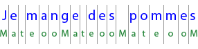
Répétition de la clef sous le texte
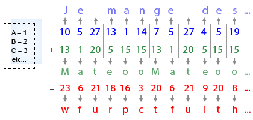
Remplacement de chaque caractère par sa lettre correspondante, puis addition et décryptage.
Si vous avez été attentif au résultat, vous avez sûrement remarqué que « fu » apparaît deux fois : « wfurpctfuith... ».
Oui, et alors ?
Eh bien quelqu'un regardant ce résultat pourrait se dire « Si ce n'est pas une coïncidence, la même clef a été répétée, car 'fu' apparaît deux fois !". Il peut donc déjà établir la longueur de la clef : sachant qu'elle commence au début, il sait que la clef s'arrête probablement au caractère 'c', et qu'elle fait donc 6 caractères ! Pour quelqu'un qui ne sait rien de votre clef à la base, il a déjà déduit quelque chose de pas mal !
Tu as dit « Sachant qu'elle commence au début »... On pourrait procéder différemment, non ? Par exemple, effectuer le cryptage en décalant la clef...
Si vous vous êtes dit ça (et même si vous ne vous l'êtes pas dit :p ), je vous invite à réfléchir là-dessus :
Une bonne méthode de cryptage est une méthode qui, même lorsqu'on la montre telle quelle, est impossible à casser.
Dans notre cas, si quelqu'un a accès au code PHP du cryptage Vernam, il n'aurait pas la moindre information qui lui permettrait de déchiffrer plus facilement un texte crypté ! La connaissance du code n'aide en rien à casser plus facilement le cryptage, c'est ce qui fait la force du système !
Par contre, si vous vous amusez à faire un décalage de clef par exemple, ça sera visible dans votre code et donc, ça ne peut pas vraiment être considéré comme quelque chose d'efficace, car il suffit de quelques tests pour retomber sur ce décalage. Bref, en cas de doute sur vos méthodes pour améliorer un système de cryptage, relisez la phrase que je viens de mettre en gras plus haut. ^^
Bien sûr, ce que je viens d'énoncer ne se base que sur des suppositions : l'apparition double du « fu » peut totalement être due au hasard, mais ce n'est pas le cas dans notre exemple. Cette idée pour tenter d'identifier la taille de la clef n'est donc pas si mauvaise. :) Maintenant, ne devenez pas parano : il faut que le texte soit vraiment long par rapport à la clef pour qu'on puisse correctement exploiter cette faille ! Dans notre cas, si le mot de passe a une taille de 12 caractères et la clef une taille de 9, on ne va vraiment pas chicaner !
Alors, pourquoi nous mettre en garde si on n'a pas à s'inquiéter ?
Parce qu'il faut que vous sachiez à quoi vous avez affaire quand même et que je préfère être honnête avec vous.
Pour un système comme le nôtre, respecter scrupuleusement les trois règles énoncées au début n'est pas archi-important, ça reste du domaine théorique, ne l'oublions pas !
Si la clef est plus grande que le mot de passe
Je l'ai déjà dit dans le cours, ça (vous ne m'en voudrez pas si je fais un copier-coller :p ).
Si on désire crypter le texte 'Mateo' avec pour clef 'Nabuchodonosaure', la clef sera raccourcie à 'Nabuc'. Donc, si vous cryptez maintenant 'Mateo' avec 'Nabuchodinosaure' comme clef, le résultat sera le même puisque le raccourcissement ('Nabuc') est le même. On obtient donc le même résultat avec deux clefs différentes. Le résultat du cryptage n'est donc pas unique et ça réduit fortement les possibilités si la différence de longueur entre la clef et le mot de passe est grande !
Conclusion
Donc, NON, ce n'est pas grave si votre clef est un peu plus longue ou un peu plus courte que votre mot de passe ! C'est juste que, si on veut être rigoureux à 100 %, il y a des risques qu'on ait légèrement plus de facilité à déterminer la clef pour les raisons évoquées ci-dessus, mais ça ne devrait pas vous empêcher de dormir. Vous ne protégez pas les données du gouvernement non plus !
La clef est générée aléatoirement
Oui, mais si ça revient à générer une clef aléatoire, autant imposer un mot de passe généré aléatoirement !
C'est clair que si on désire imposer une clef aléatoire, l'utilisateur ne s'en souviendra pas plus facilement que son mot de passe, qui est a priori plus facile à retenir qu'un texte totalement bizarroïde. Dans ces conditions, il semblerait plus intelligent de proposer un mot de passe aléatoire plutôt que de créer un système qui renvoie le MDP par e-mail à l'aide d'une clef. Je comprends totalement ce point de vue, mais là encore, il faut savoir faire la part des choses : ce n'est pas parce que votre clef n'est pas générée aléatoirement qu'on va à coup sûr pouvoir déchiffrer votre mot de passe ! Simplement, il ne faut pas suggérer de mettre le nom de son chien, car ça restreint beaucoup trop les possibilités. N'oubliez pas non plus qu'à la base, nous ne cherchons pas plus à renforcer la sécurité du site ! On cherche simplement à offrir une fonctionnalité qui agit pas trop mal si on respecte assez bien les conditions. Tout est une question de dosage, on n'atteindra jamais la sécurité absolue ! Gardez également à l'esprit que les tentatives réalisées afin de trouver votre clef sont essentiellement basées sur la force brute. Je conclus en mettant en avant l'avantage du renvoi par e-mail : quand bien même quelqu'un parviendrait à trouver votre clef, ça ne lui servirait à rien puisqu'on ne lui donnera pas le mot de passe tel quel ! Il est renvoyé par e-mail et ça, celui qui a tenté d'obtenir le MDP n'y a pas accès ! BAM, dans les dents. :-°
La clef n'est utilisée qu'une seule fois
Évidemment, on ne va pas dire au membre : « La clef que tu proposes est déjà utilisée, prends-en une autre ! ». Déjà, ça génèrera des heures supplémentaires dans votre service après-vente pour calmer les clients mécontents et en plus, il ne faut surtout pas que ça se sache ! Si ça se savait, on pourrait justement exploiter la « faille de la clef utilisée plus d'une fois », sans compter le fait que le membre en question peut s'amuser à obtenir le mot de passe de quelqu'un d'autre en utilisant cette clef (quoique comme indiqué plus haut, ça ne lui servira à rien puisque le mot de passe est renvoyé par e-mail et le membre n'y a pas accès).
D'accord, mais pourquoi c'est essentiel d'avoir une clef unique ?
Parce que si quelqu'un crypte un message avec la même clef que quelqu'un d'autre, il peut facilement déduire le message de ce dernier (plus d'infos à ce sujet sur Wikipedia). Alors bon, c'est embêtant quand-même... Que faire pour éviter ça ?
lp177 a suggéré quelque chose de pas mal pour contourner la difficulté : comme le pseudo de chaque membre est unique, il suffit de le concaténer avec la clef avant chaque cryptage-décryptage. On aurait donc le schéma suivant :
pseudo :M@teo21 clef :Le PHP, c'est pas pour les mauviettes !
clef utilisée pour le (dé)cryptage :M@teo21Le PHP, c'est pas pour les mauviettes !
Lorsqu'on désire effectuer un cryptage ou un décryptage, on dispose toujours de ces deux informations (pseudo et clef). On a donc bien une clef unique pour chaque membre à chaque fois qu'on désire effectuer l'une de ces deux opérations.
Oui mais bon, c'est quand même un peu nul... Si quelqu'un ayant un pseudo de même longueur que le mien utilise la même clef, il y aura une partie de mon mot de passe qu'il parviendra quand même à déchiffrer !
C'est sûr que si quelqu'un utilise la même clef que vous, il nous reste une partie commune dans la nouvelle clef (dans notre exemple : « Le PHP, c'est pas pour les mauviettes ! ») ! Tous les caractères cryptés par cette partie commune sont en danger. Une solution pour éviter ça serait de hacher la nouvelle clef : le pseudo fait alors office de grain de sable, et dans ce cas, on a bien une clef unique pour chaque usage ! Avouez que c'est la classe, non ?
Vous trouverez ci-dessous un tableau contenant toutes les fonctions prédéfinies utilisées dans notre code. Dans « Explication », vous trouverez à quoi elles servent et dans quel contexte on les utilise dans ce tuto.
Manipulation de la Clef
Fonction
Explication
lien PHP.net
strlen($variable)
Fonction qui renvoie le nombre de caractères que contient $variable (espaces compris). On l'utilise pour :
rallonger / raccourcir la clef jusqu'à la taille du mot de passe ;
vérifier la taille des nombres binaires (pour étendre les nombres 7 bits à 8 bits).
Fonction qui rallonge la chaîne de caractères, où :
longueur détermine la longueur jusqu'à laquelle on désire rallonger $variable ;
carractère détermine avec quelle chaîne de caractères on va rallonger $variable ;
position détermine de quel côté se fait le rallongement : STR_PAD_LEFT pour un rallongement à gauche, STR_PAD_RIGHT pour un rallongement à droite et STR_PAD_BOTH pour un rallongement des deux côtés.
On utilise cette fonction pour rallonger un nombre binaire 7 bits à un nombre binaire 8 bits (en rajoutant un 0 à gauche) ou pour rallonger la clef jusqu'à la taille du mot de passe. On n'utilise pas cette fonction pour raccourcir$variable !
substr sert à raccourcir une chaîne de caractères selon les critères suivants :
$variable est la variable contenant la chaîne de caractères qu'on désire raccourcir ;
gauche détermine combien de caractères on enlève à gauche. Ce terme est toujours positif ;
droite détermine combien de caractères on enlève à droite. Ce terme est toujours négatif.
Dans notre cas, on utilise cette fonction pour raccourcir la clef si elle est plus grande que le mot de passe. À noter que dans ce contexte, gauche vaut toujours 0.
On a un souci ? J'espère qu'il aura disparu après la lecture de la F.A.Q. ! Une question pour le moment, mais elle est de taille !
Le décryptage ne fonctionne pas.
________________________________________
Le décryptage ne fonctionne pas
Techniquement, le décryptage ne peut que fonctionner si vous l'appelez directement après avoir établi le cryptage. Autrement dit, le code suivant DOIT fonctionner :
<?php
$MDP = "Site du Zero";
$Clef = "Mateo";
$Crypt = Cryptage($MDP, $Clef); // Crypte « Site du Zero » avec la clef « Mateo » et le stocke dans $Crypt
$Decrypt = Cryptage($Crypt, $Clef); // $Decrypt contient « Site du Zero »
echo $Decrypt; // Affiche "Site du Zero"
?>
Si ce n'est pas le cas, c'est que vous avez fait une erreur dans l'implémentation de la fonction Cryptage, et je vous invite à parcourir à nouveau la partie 2 pour savoir où se trouve la faille.
Si le bout de code ci-dessus fonctionne, mais que le décryptage ne fonctionne pas, c'est le passage dans la base de données qui pose problème. Dans ce cas, c'est soit une histoire de caractères d'échappements, soit une histoire d'encodage. :)
Caractères d'échappement
<position valeur="justifie">Le cryptage Vernam peut donner tout et n'importe quoi comme chaîne de caractères... Il se peut même qu'un backslash (un \) s'y glisse. Le problème, c'est que les backslashes sont reconnus pour désigner des caractères d'échappement, et sont donc automatiquement supprimés, que ce soit lors de l'introduction d'une chaîne de caractères dans la base de données (dans tous les cas) ou dans la manipulation d'une chaîne tout court (dans les cas où ils précèdent un caractère d'échappement). Par conséquent, si votre mot de passe crypté est 'kd\l', et si vous le stockez dans la BDD, il sera réduit à 'kdl' (sans le backslash). Lorsque vous le récupérerez, le texte à décrypter sera donc 'kdl' au lieu de 'kd\l', et le résultat sera incorrect.
Pour éviter ça, vous devez utiliser la fonction addslashes, qui ajoute tout simplement des backslashes là où cela s'avère nécessaire (si vous avez suivi le tutoriel PHP de M@teo21, vous devriez connaître le principe). Pour reprendre notre exemple :
<?php
$MDP_Crypt = "kd\l"; // Supposons que le résultat du cryptage vaut "kd\l"
$MDP_Crypt1 = addslashes($MDP_Crypt); // $MDP_Crypt1 vaut "kd\\l"
// On introduit $MDP_Crypt1 dans la BDD (les \ d'échappement seront enlevés, ce qui donne "kd\l")
// ...
// Lorsqu'on récupérera $MDP_Crypt1 dans la BDD, il vaudra "kd\l", ce qui est bien le mot de passe crypté d'origine
?>
Conclusion : appliquer addslashes avant l'introduction d'une chaîne de caractères dans la BDD, ça aide. :)
Un problème d'encodage
Il se peut que, même si vous utilisez l'encodage UTF-8 aussi bien dans votre page que dans votre base de données, la transition entre les deux ne se déroule pas correctement. Pour éviter ce souci, veillez donc à utiliser utf8_encode() avant l'introduction du MDP crypté dans la BDD. Lorsque vous le ressortez, utilisez la fonction utf8_decode().
Remerciements :
ThunderSeb qui a fait un travail monstre en corrigeant la première version du tuto et ses multiples fautes d'orthographe ;
lp177 qui a proposé une bonne méthode afin d'obtenir une clef unique ;
Last but not least : berdes1 qui m'a judicieusement fait remarquer que je pouvais réduire plus de 50 lignes de code en une seule instruction (le fameux ^).